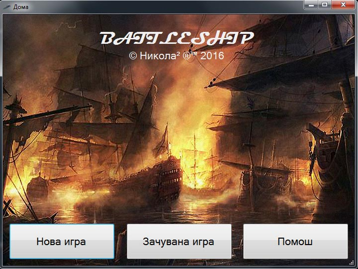
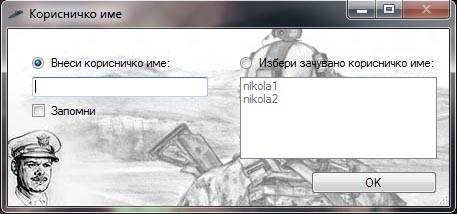
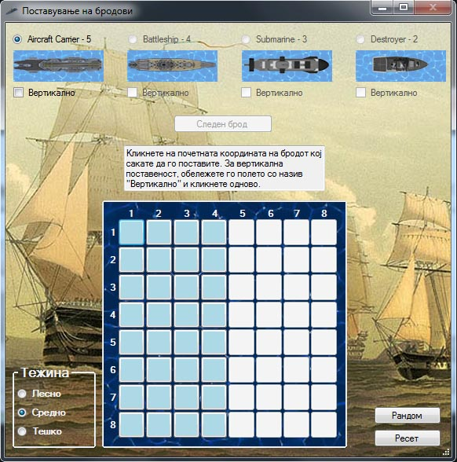
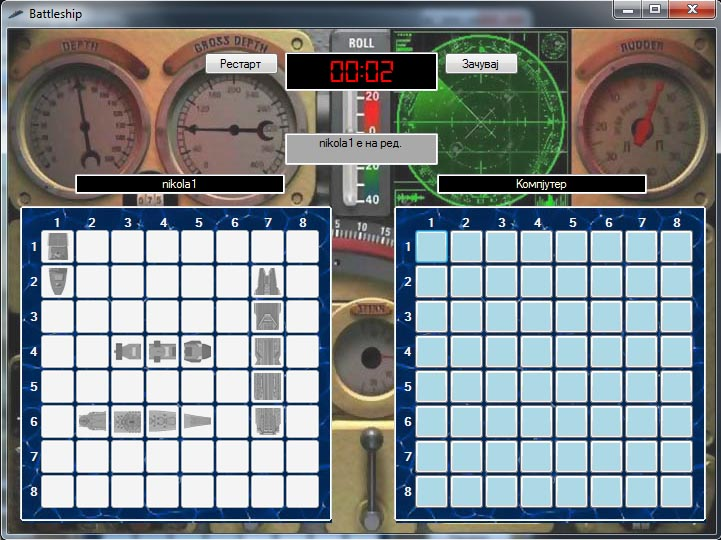

Играта насловена како „Battleship“ е апликација направена во Windows Form - C#, креирана од тим од двајца надежни развивачи на софтвер со име Никола². Учесниците во овој проект, инаку студенти на ФИНКИ се:
Играта е составена од 2 табли со полиња 8x8 (64 полиња). Целта е корисникот да избере како ќе ги наместо сопствените бродови, а потоа да наизменично погаѓа каде се бродовите на противникот додека тој ги погаѓа неговите. Корисникот/противникот е на ред се додека погодува, а редот го губи кога нема да погоди поле. Повеќе за идејата и концептот на оваа игра можете да најдете тука.
Сите алгоритми се самостојно креирани, без консултација со интернет.
Играта се отвора преку „.sln“ фајлот со што нејзиното егзекутирање ќе биде преку debug од Visual studio или преку двоен клик на Battleshipv1.exe во фолдерот Debug внатре во проектот. За да функционира, мора структурата на фолдерите да се запази и не смее да недостасуваат информации. Battleship ја имплементиравме така што во главната форма „Form1.cs“, пред истата да се појави, излегува екран за избор на нова игра, зачувана игра или помош.


Потоа следи форма на која корисникот може да ги намести своите бродови по желба или рандом. Тука се одбира и тежината на играта: лесно, средно, тешко. Тука може и да се избере ресетирање на мапата со цел започнување на местењето одново. Кога мапата ќе биде спремна, копчето „Следен брод“ се претвора во копче „Готово“. Со клик на копчето „Готово“ играта започнува.

Корисникот погаѓа и е на ред се додека не промаши. Тогаш гаѓа компјутерот и е на ред се додека не промаши. Победник е оној кој ќе му ги сруши сите бродови на противникот. На крајот се покажува листа на најдобри времиња за конкретното ниво и порака за честитка доколку корисникот има едно од 5те најдобри нивоа.

Тековната верзија е 1.0, изработена во мај, 2016 како проект по курсот Визуелно Програмирање на ФИНКИ.